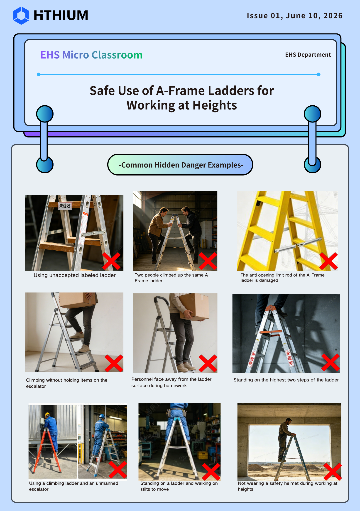
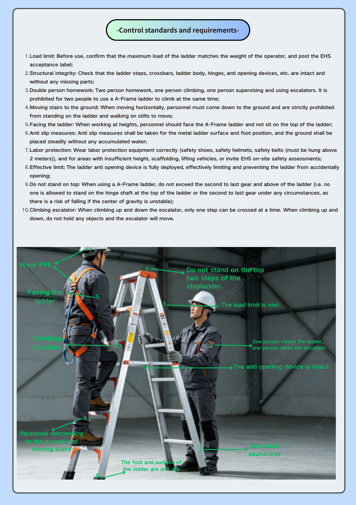
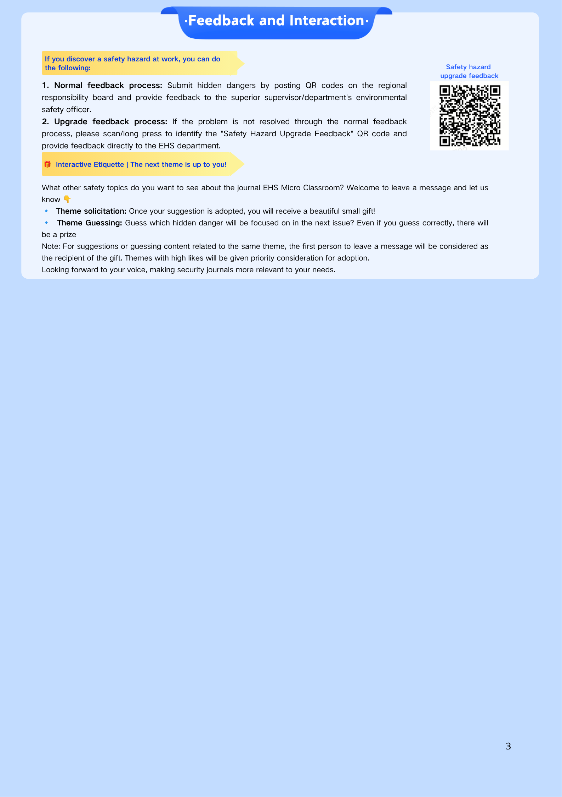

A-Frame Ladders / Safe Use of A-Frame Ladders for Working at Heights / Work Practice Tips



Identify hazard → Report on‑site → EHS escalation → QR code submission
Scan QR code to report safety hazards